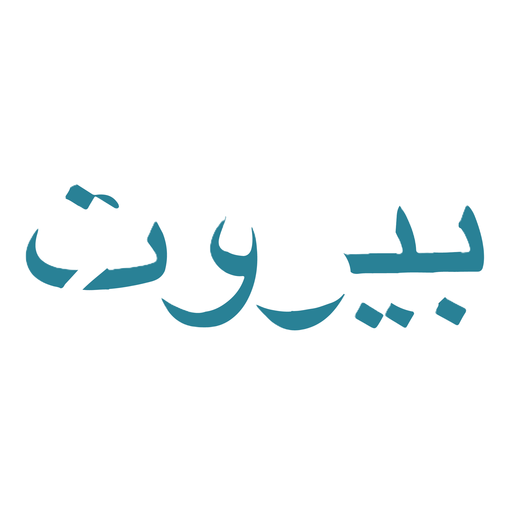

Projects
Optimization research, consulting strategy and community impact
Three projects outside my FYP and internship, each using the same engineering toolkit on a very different problem.
Project 1 · Research · 2026 to present
Optimizing strategic alliances in Lebanese parliamentary elections
Lebanon's proportional electoral law makes alliance-building a combinatorial problem. Which parties should join which lists in which districts, and which candidates should fill each list's seats? I am co-authoring research that formulates these decisions as a mixed-integer linear program in Python. It includes electoral-law constraints, political compatibility between parties, and historical election data.
Voter support is never known in advance, so we apply robust optimization: the model looks for alliance and allocation decisions that still perform well when support moves within a plausible range, rather than decisions that are optimal for one guess.
Reflection
What I learned. In INDE 302 and 303, the problems arrived already formulated. Here, most of the work was deciding what to model: which rules of the electoral law become hard constraints, and how to turn something as soft as political compatibility into numbers. Formulation is a modeling judgment, not just algebra.
Perspectives. Election models touch real people and real politics, so we have to be careful about what the model claims. A model can show what coalitions are mathematically favorable. It cannot say what is right for voters. Working with a professor and a co-author also taught me how research is checked: every modeling choice has to survive someone else's questions.
Moving forward. Robust optimization is the tool I most want to deepen in graduate school. Uncertainty is everywhere in planning, from voter support to restaurant demand, and this project showed me a principled way to plan for it.
Project 2 · Community · August 2025 to present
Beirut 2030: EduSustain Lebanon
Beirut 2030 is a program that brings the UN Sustainable Development Goals into Lebanese schools. Our team, EduSustain Lebanon, designed and delivered more than 15 interactive sessions, mentoring programs and awareness activities, reaching more than 300 students. We also earned the interdisciplinary award at AUB STEM Week among more than 25 teams.
Our work included weekly SDG lessons at Ras Beirut School and an agreement with its principal to found a student-led Sustainability Club. We also designed the Junior 2030 Bootcamp, a two-day program for grades 10 to 12 that ends in a judged competition. Its challenges were deliberately engineering-flavored: allocating water fairly on a limited budget, choosing an energy mix that balances cost, emissions and reliability, and extending landfill life at minimum cost. Alongside it, a gamified SDG learning app was developed for the bootcamp's soft launch.

Evidence: progress report, December 2025 to February 2026
Our team's report on the school sessions, the bootcamp's academic design, logistics, budget structure and partner meetings.
Open the report (PDF)Reflection
What I learned. Designing the bootcamp was an operations problem: fixed dates, an uncertain number of participants, a $30 fee per student, and judges and rooms that had to match the number of teams. We built the budget around categories that scale with attendance and treated extras like sponsored t-shirts as upgrades, not dependencies. That is the same thinking as planning capacity under uncertain demand.
Perspectives. Students' feedback changed our teaching. Surveys after each session showed that they engaged most in interactive activities, so we shifted our lessons toward them. An outside mentor, IBTIKARI, pushed us to think about how the program could sustain itself after the bootcamp. That made me see sustainability in the project itself, not only in its topic.
Transfer. Explaining trade-offs such as fairness against cost to high-school students forced me to say clearly what an optimization model does, without the math. I now use that skill when I present technical results to non-technical audiences, including our FYP partner.
Project 3 · Consulting · April to June 2025
1st Place, LAU Case Competition, with MSD
Our team won first place nationally at the LAU Case Competition, in a case set with the pharmaceutical company MSD. As the team's Supply Chain Manager, I developed a contingency plan to keep two essential medicines available in Lebanon during a crisis, within a budget of under $500,000.
In the same season I also competed in the IISE AUB × Wolf of Bey case competition. There, our strategy for an e-commerce brand received the Strategic Excellence Award for top-tier strategy design.
Reflection
What I learned. A case competition squeezes a consulting project into days. I learned to frame the problem quickly, divide the work, and protect the time needed to bring it back into one story. My part, the supply chain, had to be both realistic and affordable, which meant prioritizing ruthlessly within the budget.
Perspectives. Planning for medicine availability in a crisis is not abstract in Lebanon. Thinking about patients who depend on two specific medicines made the stakes concrete and pushed us to build in redundancy rather than plan only for the expected case.
Transfer. This was my first experience of the consulting style of work, which I went on to do for real during my internship at Mindsets. Its core idea, planning for disruption within a fixed budget, comes back in my research on robust optimization.